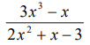
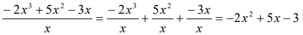
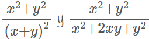
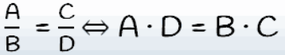
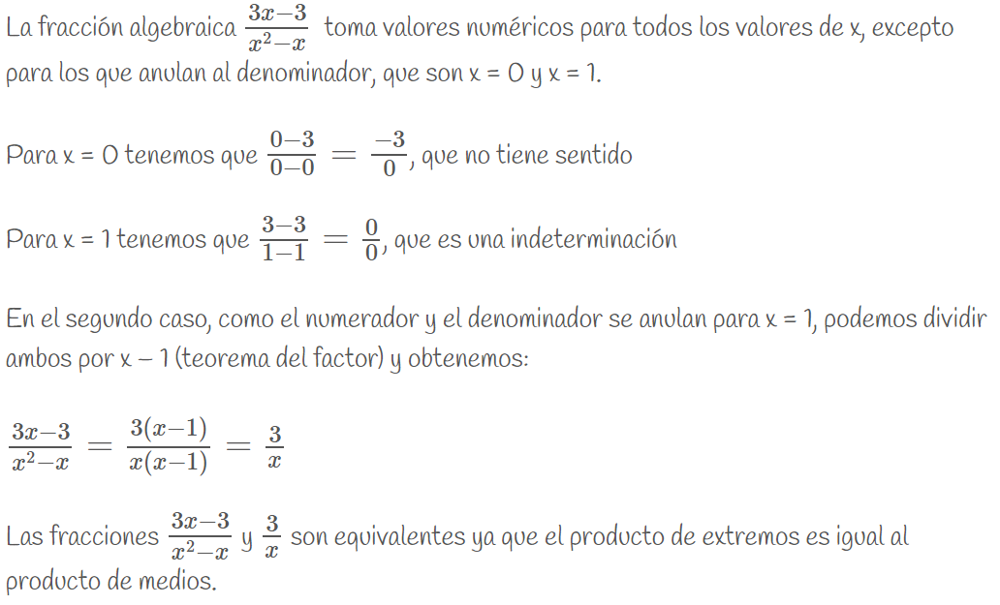
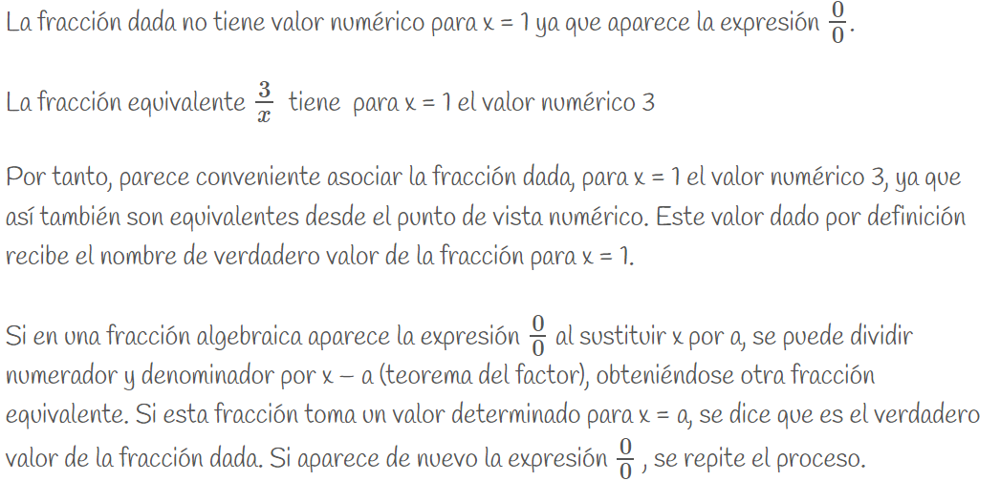

1. Fracciones algebraicas
|
Una fracción algebraica es el cociente indicado de dos polinomios, siendo el divisor un polinomio no nulo. Ejemplo:  Es sencillo constatar que la expresión anterior no es un polinomio: cualquier polinomio puede ser evaluado en cualquier número real. Sin embargo, esa expresión no puede ser evaluada para x = 1, ya que nos quedaría el número 0 en el denominador. |
Podríamos creer que la siguiente fracción polinómica sí es un polinomio:

La expresión de la derecha sí es un polinomio, pues se trata de una suma de monomios, pero la de la izquierda no lo es ya que no puede ser evaluada en x = 0 . No obstante, esa fracción algebraica y el polinomio, cuando son evaluados en cualquier número diferente de cero, ofrecen el mismo valor. Son expresiones equivalentes allí donde ambas tienen sentido.
|
Dos fracciones algebraicas son equivalentes cuando tienen el mismo valor numérico para cualesquiera valores que le asignemos a las letras. Ejemplo:  Otra forma de verlo: dos fracciones algebraicas son equivalentes si el producto de los medios es igual al producto de los extremos.  con A, B, C, y D polinomios. |
Si se multiplican o dividen el numerador y el denominador de una fracción algebraica por un mismo polinomio distinto del polinomio nulo, se obtiene otra fracción algebraica equivalente a la dada.
|
Simplificar una expresión algebraica es dividir el numerador y el denominador por un mismo factor no nulo. Una fracción es irreducible cuando no puede simplificarse más. En este caso se dice que el numerador y el denominador son polinomios primos entre sí. Para simplificar fracciones algebraicas se descomponen el numerador y el denominador en factores y luego se suprimen los factores comunes. |

